The Grammar of Graphics¶
Overview¶
The Grammar of Graphics is a theoretical framework for describing and constructing statistical graphics. Developed by Leland Wilkinson in his 2005 book of the same name, it provides a systematic way to think about visualizations as compositions of independent components. This framework is the foundation of ggplot2 in R and influences many modern visualization libraries.
Why a Grammar?¶
Just as natural language grammar lets us construct infinite sentences from a finite set of rules, the Grammar of Graphics lets us construct infinite visualizations from a finite set of components. This approach offers several advantages:
- Consistency: Every visualization follows the same structural rules
- Flexibility: Components can be combined in countless ways
- Clarity: The structure makes it clear what each part of a visualization does
- Efficiency: Once you learn the grammar, you can create any visualization
The Seven Layers¶
The Grammar of Graphics breaks visualizations into seven fundamental components:
1. Data¶
The foundation of every visualization is the data itself. This includes:
- The dataset being visualized
- Variables of interest
- Data types (categorical, continuous, temporal)
The data layer answers: What information are we visualizing?
2. Transformations (Statistics)¶
Transformations convert raw data into values suitable for display. Examples:
- Identity: Use values as-is
- Count: Count occurrences (for bar charts)
- Bin: Group continuous data into bins (for histograms)
- Smooth: Calculate trend lines
- Summary: Compute statistics (mean, median, etc.)
# Implicit transformation: geom_bar counts occurrences
ggplot(mpg, aes(x = class)) +
geom_bar() # stat = "count" is implicit
# Explicit transformation
ggplot(mpg, aes(x = class, y = hwy)) +
stat_summary(fun = mean, geom = "bar")
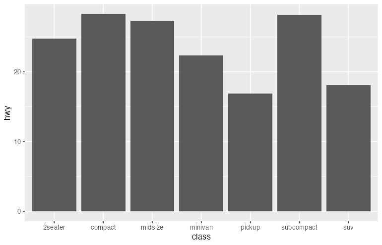
The transformation layer answers: How should we process the data?
3. Scales¶
Scales map data values to aesthetic values. They define:
- The range of visual properties (colors, sizes, positions)
- How data values translate to those properties
- Legends and axes
# Position scales map data to x/y coordinates
# Color scales map data to colors
ggplot(mpg, aes(x = displ, y = hwy, color = class)) +
geom_point() +
scale_x_continuous(limits = c(1, 7)) +
scale_color_brewer(palette = "Set1")
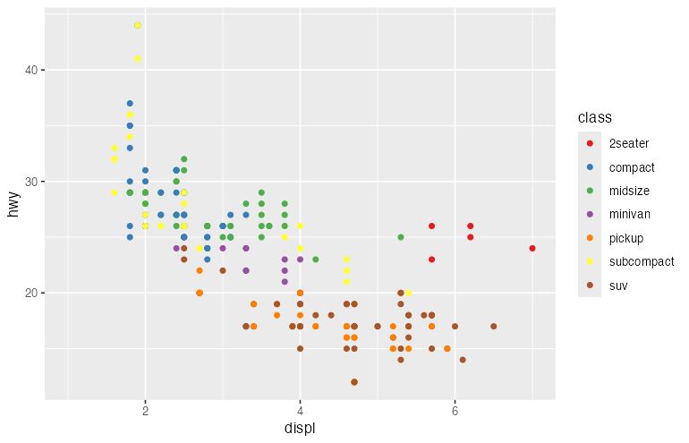
The scale layer answers: How do data values become visual values?
4. Coordinate System¶
The coordinate system defines how positions are interpreted and displayed:
- Cartesian: Standard x-y coordinates
- Polar: Angle and radius (for pie charts, radar charts)
- Geographic: Map projections
- Flipped: Swapped x and y axes
# Cartesian (default)
ggplot(mpg, aes(x = class)) +
geom_bar()
# Polar (creates a pie-like chart)
ggplot(mpg, aes(x = factor(1), fill = class)) +
geom_bar(width = 1) +
coord_polar(theta = "y")
# Flipped
ggplot(mpg, aes(x = class)) +
geom_bar() +
coord_flip()

The coordinate layer answers: How is position space organized?
5. Geometric Elements (Marks)¶
Geometric elements are the visual objects that represent data:
- Points: Scatter plots
- Lines: Line charts
- Bars: Bar charts
- Areas: Area charts
- Polygons: Maps, custom shapes
# Different geoms for the same data
ggplot(economics, aes(x = date, y = unemploy)) +
geom_line() # Line chart
ggplot(economics, aes(x = date, y = unemploy)) +
geom_area() # Area chart
ggplot(economics, aes(x = date, y = unemploy)) +
geom_point() # Scatter plot
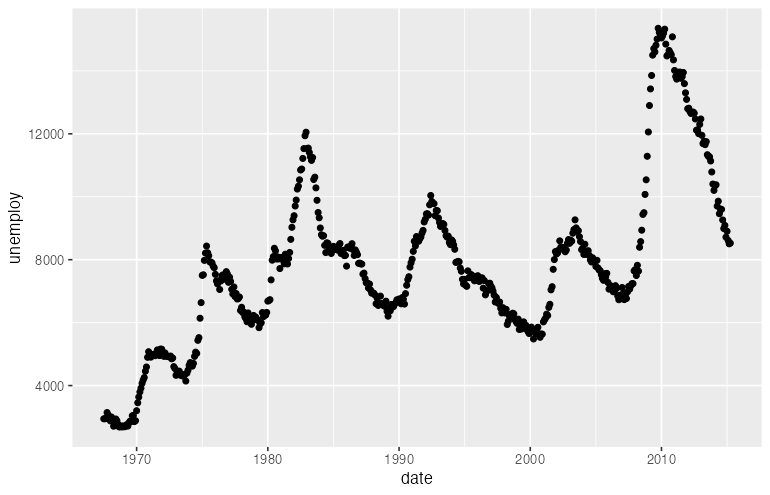
The geometry layer answers: What visual marks represent the data?
6. Aesthetic Mappings¶
Aesthetics connect data variables to visual properties of geometric elements:
| Aesthetic | Visual Property | Example Data |
|---|---|---|
| x | Horizontal position | Continuous or categorical |
| y | Vertical position | Continuous or categorical |
| color | Outline color | Categorical or continuous |
| fill | Interior color | Categorical or continuous |
| size | Element size | Continuous |
| shape | Point shape | Categorical |
| alpha | Transparency | Continuous |
| linetype | Line pattern | Categorical |
# Multiple aesthetic mappings
ggplot(mpg, aes(
x = displ, # Position
y = hwy, # Position
color = class, # Color encodes class
size = cyl, # Size encodes cylinders
alpha = year # Transparency encodes year
)) +
geom_point()
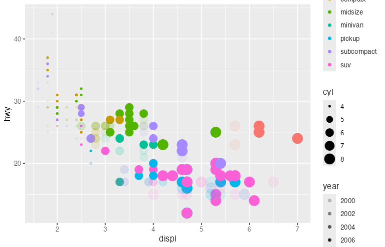
The aesthetic layer answers: How do data variables map to visual properties?
7. Guides (Legends and Axes)¶
Guides help readers decode the visualization:
- Axes: Decode position encodings
- Legends: Decode color, size, shape encodings
- Annotations: Provide context
ggplot(mpg, aes(x = displ, y = hwy, color = class)) +
geom_point() +
guides(
color = guide_legend(title = "Vehicle Class", ncol = 2)
) +
labs(
x = "Engine Displacement (L)",
y = "Highway MPG"
)
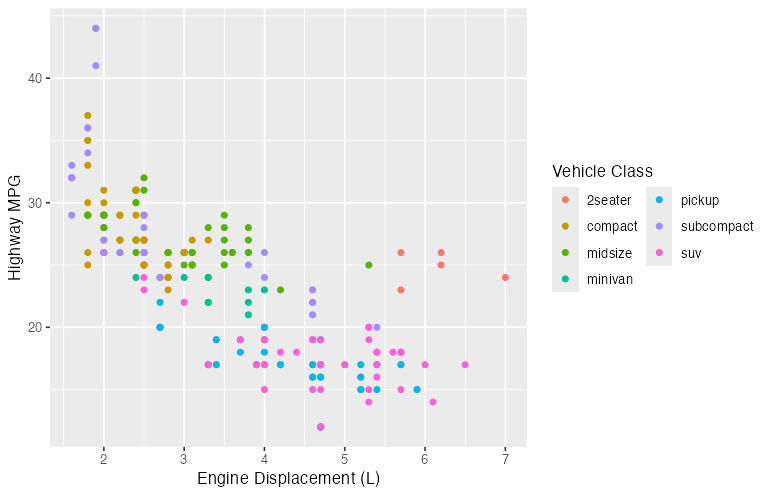
The guide layer answers: How do readers interpret the visual encodings?
Faceting (Bonus Layer)¶
Faceting splits data into multiple panels based on categorical variables:
# Facet by one variable
ggplot(mpg, aes(x = displ, y = hwy)) +
geom_point() +
facet_wrap(~ class)
# Facet by two variables
ggplot(mpg, aes(x = displ, y = hwy)) +
geom_point() +
facet_grid(drv ~ cyl)
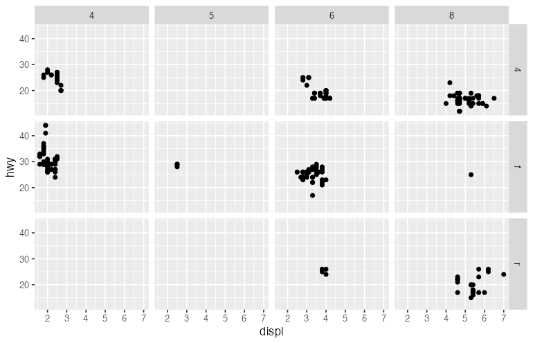
The facet layer answers: How should we split the data into subplots?
Putting It All Together¶
Here is how all components combine to create a complete visualization:
library(ggplot2)
ggplot(
# 1. DATA: The dataset
data = mpg,
# 6. AESTHETICS: Map variables to visual properties
mapping = aes(x = displ, y = hwy, color = class)
) +
# 5. GEOMETRY: Visual representation
geom_point(size = 3, alpha = 0.7) +
# 2. TRANSFORMATION: Add smoothed trend line
geom_smooth(method = "lm", se = FALSE) +
# 3. SCALES: Control mappings
scale_x_continuous(limits = c(1, 7), breaks = 1:7) +
scale_y_continuous(limits = c(10, 45)) +
scale_color_brewer(palette = "Set2") +
# 4. COORDINATE SYSTEM
coord_cartesian() +
# 7. FACETING: Small multiples
facet_wrap(~ year) +
# 7. GUIDES: Labels and legends
labs(
title = "Fuel Efficiency by Engine Size",
x = "Displacement (liters)",
y = "Highway MPG",
color = "Vehicle Class"
) +
# THEME: Non-data appearance
theme_minimal()
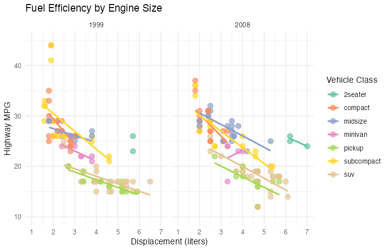
Design Principles from the Grammar¶
Principle 1: Separate Data from Representation¶
The same data can have multiple visual representations:
# Same data, three representations
p1 <- ggplot(mpg, aes(x = class)) + geom_bar()
p2 <- ggplot(mpg, aes(x = class)) + geom_bar() + coord_polar()
p3 <- ggplot(mpg, aes(x = class)) + geom_bar() + coord_flip()
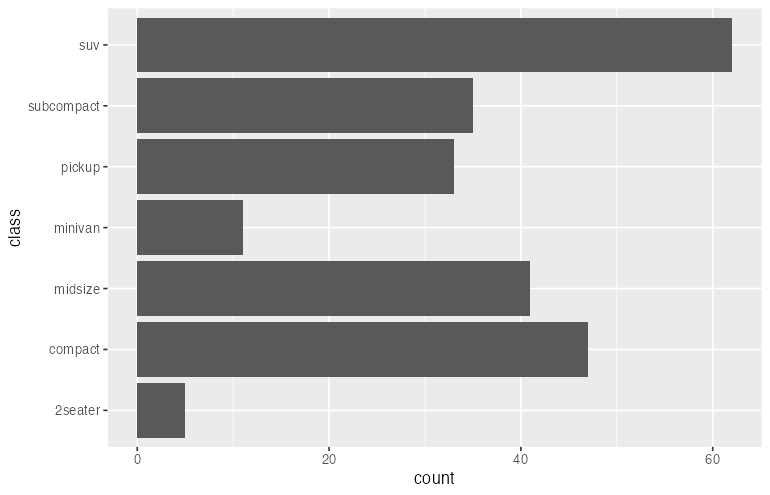
Principle 2: Use Appropriate Scales¶
Different data types require different scales:
# Continuous data: continuous scale
ggplot(mpg, aes(x = displ, y = hwy, color = cty)) +
geom_point() +
scale_color_gradient(low = "blue", high = "red")
# Categorical data: discrete scale
ggplot(mpg, aes(x = displ, y = hwy, color = class)) +
geom_point() +
scale_color_brewer(palette = "Set1")
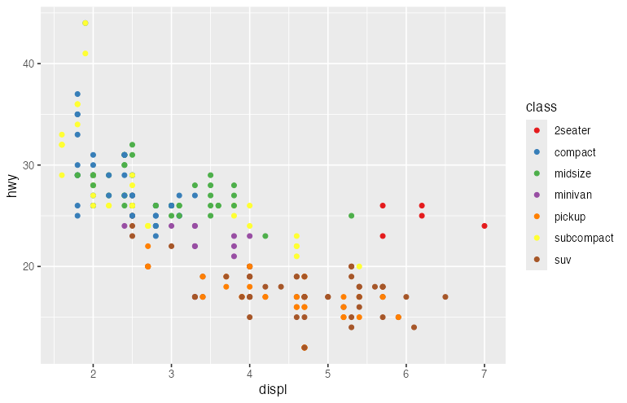
Principle 3: Layer Information¶
Build complexity through layers:
ggplot(mpg, aes(x = displ, y = hwy)) +
# Layer 1: All data points
geom_point(alpha = 0.3) +
# Layer 2: Trend line
geom_smooth(method = "lm", color = "blue") +
# Layer 3: Highlighted subset
geom_point(
data = subset(mpg, class == "2seater"),
color = "red", size = 4
) +
# Layer 4: Annotation
annotate("text", x = 6, y = 35, label = "2-seaters")
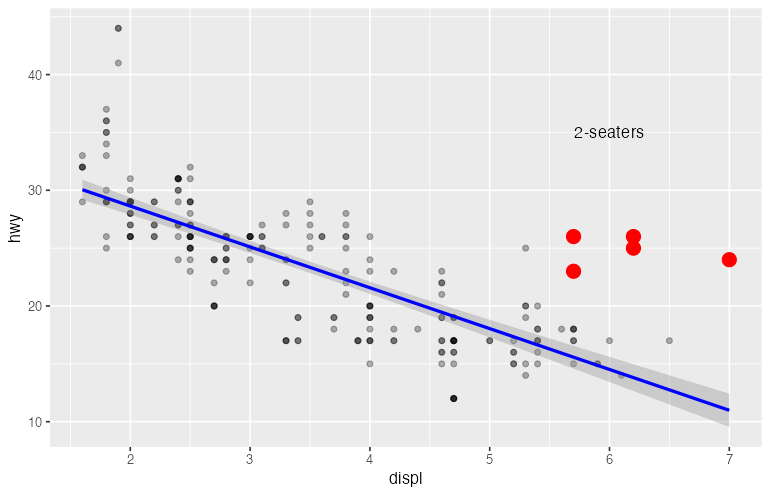
Principle 4: Encode the Most Important Variables with the Most Effective Channels¶
Visual channels have different effectiveness:
Most effective for quantitative data: 1. Position (x, y) 2. Length 3. Angle/Slope 4. Area 5. Volume 6. Color saturation
Most effective for categorical data: 1. Position 2. Color hue 3. Shape 4. Texture
# Position for the most important relationship
# Color for secondary grouping
ggplot(mpg, aes(
x = displ, # Primary: position
y = hwy, # Primary: position
color = class # Secondary: color
)) +
geom_point()
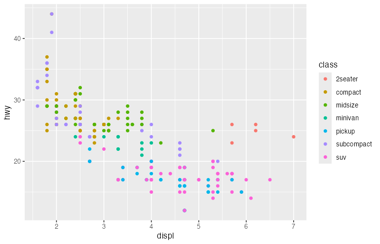
The Grammar in Other Libraries¶
Python: Plotnine¶
Plotnine is a Python implementation of the Grammar of Graphics:
from plotnine import ggplot, aes, geom_point, labs
import pandas as pd
mpg = pd.read_csv("mpg.csv")
(
ggplot(mpg, aes(x="displ", y="hwy", color="class"))
+ geom_point()
+ labs(title="Fuel Efficiency")
)
Python: Altair¶
Altair uses a declarative approach inspired by the Grammar:
import altair as alt
import pandas as pd
mpg = pd.read_csv("mpg.csv")
alt.Chart(mpg).mark_point().encode(
x="displ:Q",
y="hwy:Q",
color="class:N"
)
JavaScript: Vega-Lite¶
Vega-Lite is a JSON-based visualization grammar:
{
"data": {"url": "mpg.json"},
"mark": "point",
"encoding": {
"x": {"field": "displ", "type": "quantitative"},
"y": {"field": "hwy", "type": "quantitative"},
"color": {"field": "class", "type": "nominal"}
}
}
Common Patterns¶
Pattern 1: Overview + Detail¶
# Overview
p1 <- ggplot(mpg, aes(x = displ, y = hwy)) +
geom_point(alpha = 0.3) +
labs(title = "All Data")
# Detail (filtered)
p2 <- ggplot(subset(mpg, class == "compact"), aes(x = displ, y = hwy)) +
geom_point() +
geom_smooth(method = "lm") +
labs(title = "Compact Cars Only")
library(patchwork)
p1 + p2
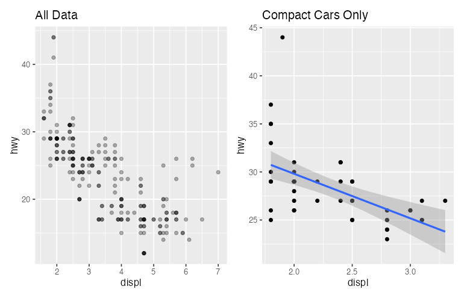
Pattern 2: Small Multiples¶
ggplot(mpg, aes(x = displ, y = hwy)) +
geom_point() +
geom_smooth(method = "lm", se = FALSE) +
facet_wrap(~ class, scales = "free")
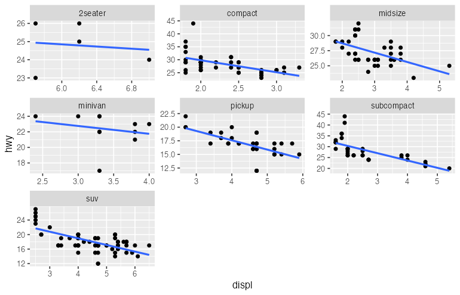
Pattern 3: Layered Annotations¶
ggplot(mpg, aes(x = displ, y = hwy)) +
geom_point(alpha = 0.5) +
geom_smooth(method = "lm", se = TRUE) +
geom_hline(yintercept = mean(mpg$hwy), linetype = "dashed", color = "red") +
annotate("text", x = 6, y = mean(mpg$hwy) + 2,
label = paste("Mean:", round(mean(mpg$hwy), 1)))
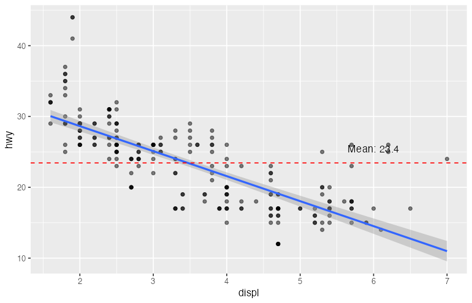
Summary¶
The Grammar of Graphics provides a systematic framework for creating visualizations:
| Component | Question Answered | ggplot2 Function |
|---|---|---|
| Data | What to visualize? | ggplot(data = ...) |
| Aesthetics | How to map variables? | aes(...) |
| Geometry | What visual marks? | geom_*() |
| Statistics | How to transform? | stat_*() |
| Scales | How to map values? | scale_*() |
| Coordinates | How to interpret position? | coord_*() |
| Facets | How to split into panels? | facet_*() |
| Guides | How to decode? | labs(), guides() |
| Theme | How should it look? | theme() |
Understanding this grammar empowers you to: - Create any visualization by composing components - Reason about why certain visualizations work better than others - Quickly modify and iterate on designs - Translate designs between different visualization libraries
Further Reading¶
- Wilkinson, L. (2005). The Grammar of Graphics (2nd ed.). Springer.
- Wickham, H. (2010). A Layered Grammar of Graphics. Journal of Computational and Graphical Statistics, 19(1), 3-28.
- ggplot2 Book
- Vega-Lite Documentation